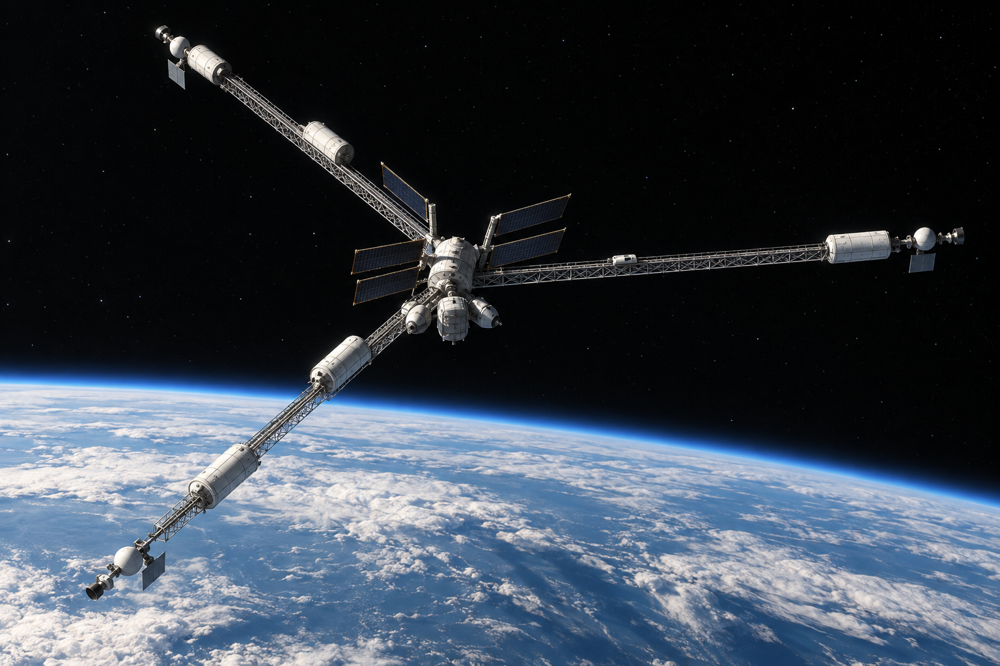
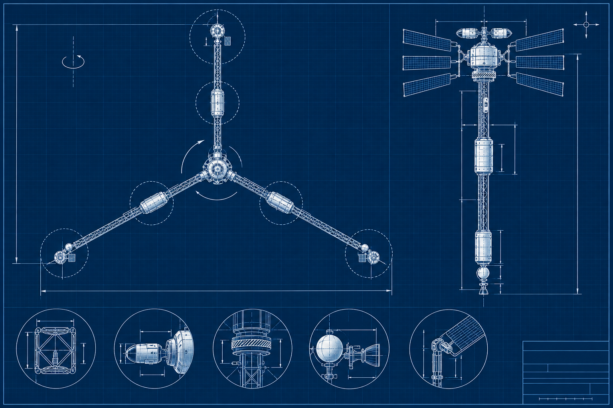
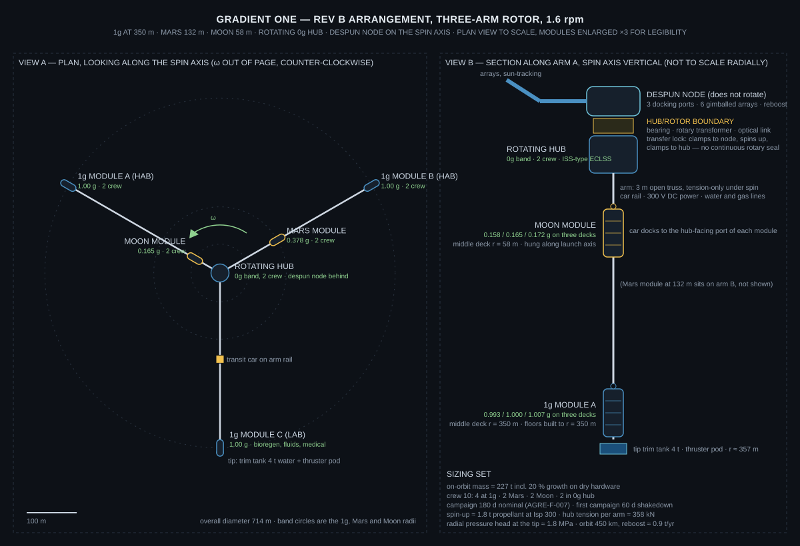

A three-arm rotating research platform that places 1g, Mars gravity, lunar gravity and a rotating microgravity hub in one vehicle at one spin rate, for six-month crewed campaigns. It exists to produce the dataset that the Artificial Gravity Requirements Evaluation defines, and to retire the rotating-structure risks that Aegis Station carries as assumptions.

Two questions, one vehicle. The first is the station's own: whether people can live and work for months at 1g produced by rotation at 1.6 rpm, the operating point Aegis Station is designed around. No one has measured that in orbit. The second is the surface program's: how bone, cardiovascular, ocular and plant endpoints respond to lunar and Mars gravity over months, against a 1g control in the same vehicle, sharing the same radiation, diet, lighting and instruments.
Both questions need the same thing: several gravity levels, held for a long time, in one place, with rotation present. A fixed-rate rotor with modules at three radii is the cheapest structure that gives all of that at once. The platform also carries a rotating 0g population, so that the effect of rotation can be separated from the effect of gravity level.
A Y-shaped rotor: three open-truss arms at 120°, each about 344 m long, with an identical habitat module hung from every tip at the 1g radius. The lunar module sits inboard on arm A and the Mars module inboard on arm B. A rotating hub module joins the three arms and houses the 0g crew. A small despun node on the spin axis carries the docking ports, solar arrays, reboost thrusters and antennas, and does not rotate.


| Band | Middle deck radius | Gravity on the three decks | Location | Crew |
|---|---|---|---|---|
| 1g | 350 m | 1.007 / 1.000 / 0.993 g | Three tip modules (two habitats, one lab) | 4 |
| Mars | 132 m | 0.385 / 0.378 / 0.371 g | Inboard on arm B | 2 |
| Moon | 58 m | 0.172 / 0.165 / 0.158 g | Inboard on arm A | 2 |
| 0g, rotating | 0 m | < 0.001 g, 1.6 rpm present | Rotating hub module | 2 |
| 0g, non-rotating | on axis | 0 g, no rotation | Despun node (transit only) | – |
Spin rate 1.60 rpm (ω = 0.167 rad/s). Coriolis acceleration at 1 m/s walking is 0.34 m/s², 3.4 % of g. Head-to-foot gradient over 2 m at the 1g band is 0.57 %. Overall diameter about 714 m.
The radius is not chosen for the biology. Earth is the 1g control for the biology, and a smaller, faster platform would give the partial-g bands at a fraction of the arm length. The radius is chosen because 1g at 1.6 rpm is the station's operating point, and the tolerance data AGRE produces is reported per spin rate. A platform at a different rate measures a different column of the table.
The sizing model makes the trade explicit. At 3 rpm the 1g radius is 99 m, Mars is 38 m and the Moon is 16 m. The arms shrink by about 250 m each. Because the arms are light open trusses under tension, that saves about 33 t of the 227 t vehicle, roughly 14 %, and a similar fraction of the structure cost. The crew-rated modules, the boundary, the assembly campaign and the operations are unchanged. The 3 rpm platform also carries twice the Coriolis at walking speed, 6.4 % of g, which is the effect the smaller radius was supposed to avoid measuring.
One common pressurized module, five copies: a 4.5 m diameter, 11 m hull with three 2.4 m decks and a utility deck, about 14 t dry and 17 t outfitted, in the class of the ISS laboratory and node modules. Every module is mounted radially, its long axis along the arm, so that the centripetal load runs through the hull along the same axis its launch structure already carries at several g. The 1g service load is a fraction of the launch case. Tip modules hang from the arm end; the Moon and Mars modules sit beside the arm on cradles at 0.17 g and 0.38 g respectively.
The radial orientation is also what the requirements ask for. Three decks give a measured gravity gradient between floors (AGRE-F-004). Stairs and ladders between decks are radial transit (AGRE-F-002). Floors in the 1g modules are built to the 350 m radius, as the station's rings are. The hub-facing end of every module carries the port that the transit car docks to.
Rev A had a "central non-rotating hub" and said nothing about how anything crossed into it. Rev B adopts the station's own principle from the hub/ring boundary page: no continuous rotary mechanical interface carries a life-critical flow. Every crossing is cyclic, contactless, or eliminated.
| Flow | Crossing | Heritage |
|---|---|---|
| Crew and cargo | A transfer lock: a short pressurized cylinder on the bearing that clamps to the despun node, spins up to 1.6 rpm, and clamps to the rotating hub. Hatches on both faces. No seal ever slips under pressure. | Hatches and docking mechanisms; the station's transit-pod magazine in miniature |
| Power | Contactless rotary transformer across the bearing. Arrays and battery on the despun side. | Rotary transformers in flight mechanisms; no slip ring |
| Data | Free-space optical link on the spin axis. | Optical intersatellite links |
| Heat | Rejected on each side independently. No fluid crosses. | Body and panel radiators |
| Thrust and torque | Reboost thrust from the despun node passes through the bearing as a radial load. A drive at the bearing holds the node despun. | Dual-spin spacecraft |
The vehicle is a dual-spin spacecraft: a rotor spinning about its major axis and a despun platform on the same bearing. That arrangement flew for decades on communications satellites at far higher rates. The failure case is benign: a seized bearing turns the node into a co-rotating hub, and the two crew vehicles that stay docked for the whole campaign remain the crew's way home either way. The boundary's performance under rotation is itself a campaign objective (AGRE-F-012), and it is the station's boundary at the station's spin rate.
Crew move between bands in a pressurized two-seat car on a rail along each arm, docking to the hub-facing port of each module. The alternative, a pressurized spoke tube along each arm, is a walkable path and is what the station will need, but at about 90 kg per metre it adds about 60 t to this vehicle. The car gives the transition measurements AGRE asks for and leaves the spoke to the station's own design.
The water and gas lines along the arms are where the rotating-frame fluids requirement gets tested. The static pressure head from the hub to the tip is 1.8 MPa, about 18 atmospheres, and the station's rings at 390 m see 1.9 MPa. Pumps at the tip work against it; a line draining toward the hub has it for free. Coriolis asymmetry in radial flow, two-phase behaviour and separator performance at each gravity level are measured on the lines and in the lab module (AGRE-F-011).
| System | Rev B sizing |
|---|---|
| Orbit | 450 km, 51.6°. Drag on ~900 m² effective area is about 0.09 N; reboost from the despun node about 0.9 t of propellant per year at 300 s. |
| Power | Load about 55 kW: five habitat modules at 5 kW, hub and node 6 kW, growth racks 11 kW, exercise and science 8 kW, arm utilities 5 kW. Six 20 kW deployable arrays on two gimbals give about 102 kW sunlit at end of life and 58 kW orbit-average. Battery 82 kWh for the 36-minute eclipse at 40 % depth of discharge. Arm distribution at 300 V DC, about 1 t of copper. |
| Thermal | Rejected per module by body-mounted and arm-mounted panels. No long fluid loops, nothing across the boundary. |
| Life support | Atmosphere revitalization local to each module. Water recovery and oxygen generation centralized in the 1g habitats, where gravity phase separation applies. The hub keeps ISS-type microgravity equipment. Consumables about 7 t per 180-day campaign for ten crew, delivered by two to three cargo flights. |
| Crew transport | Two seven-seat crew vehicles docked at the despun node for the full campaign, one cargo port. Standard docking; the visiting vehicle never has to match a spin. |
| Radiation | Six months at 450 km and 51.6° is the ISS exposure regime. No shielding beyond standard module walls; the tip water tanks are not in a useful geometry for shielding and are not credited. |
The requirements page asks for at least six months of exposure per subject (AGRE-F-007) and for the study to be powered before it starts (AGRE-F-014). Rev A's 30–90 day campaigns with 2–4 crew did not meet either. Rev B baselines 180-day campaigns with ten crew: four at 1g, two at Mars gravity, two at lunar gravity, two in the rotating hub. The first campaign is a 60-day shakedown.
That is still two subjects per partial-gravity band per campaign. The human dose-response result is a program result, not a campaign result: five campaigns over about three years give ten subjects per partial-g band and twenty at 1g. The plant, microbial, fluids and mechanical results are complete within a campaign. The page says so rather than implying a single mission settles the human question.
| Item | Mass | Basis |
|---|---|---|
| Tip modules, 1g × 3 | 51 t | 14 t hull + 3 t outfit each, ISS lab-class |
| Mars and Moon modules | 34 t | Same module |
| Rotating hub module | 14 t | Node-class, three radial ports |
| Arm trusses × 3 | 31 t | 344 m at 30 kg/m, tension-dominated |
| Arm utilities: rail, power, lines, MMOD | 6 t | 6 kg/m |
| Transit cars × 3, radiator panels, tip tanks and thruster pods | 12 t | 2 t per car |
| Despun node, boundary, transfer lock | 13 t | 8 t pressurized node, 3 t bearing and couplings, 2 t lock |
| Arrays, gimbals, battery, propulsion, avionics | 7 t | Six 20 kW arrays at 0.4 t |
| Dry hardware | 168 t | |
| Growth, 20 % on dry hardware | 34 t | |
| Trim and reserve water, consumables, propellant | 25 t | 12 + 10 + 3 t |
| On orbit, campaign start | ~227 t | Excludes docked visiting vehicles |
Rev A did not carry a mass budget. Its "does not assume" list excluded a 250–500 t vehicle; Rev B lands under that, but only because the arms are light and the modules are few.
Rev A gave $600 M to $1.4 B. That is below the cost of a single crew-rated module program with its launch and does not survive contact with the analogs. Rev B states a rough order of magnitude by element, using ISS-module, Gateway-element and commercial-station analogs, with 30 % for program management and reserves. It is a cost class, not an estimate.
| Element | Low | High |
|---|---|---|
| Common habitat module, non-recurring plus five units | $1.6 B | $2.4 B |
| Rotating hub module | $0.3 B | $0.5 B |
| Despun node, boundary hardware, arrays | $0.5 B | $0.9 B |
| Arms, cars, trim system, arm utilities | $0.3 B | $0.6 B |
| Integration, test, ground segment, operations development | $0.5 B | $0.8 B |
| Launch of ~230 t | $0.4 B (heavy lift, 3–4 flights) | $2.0 B (medium lift, ~15 flights) |
| On-orbit assembly campaign | $0.4 B | $0.7 B |
| To first campaign, with 30 % reserves | $5 B | $10 B |
| Operations per year: two crew flights, three cargo flights, ground | $0.8 B | $1.1 B |
Development timeline of 8–10 years to first campaign is retained from Rev A; it is consistent with the Gateway analog. The number that moved is the price.
| AGRE | Closure on Gradient One Rev B |
|---|---|
| F‑001, F‑007, F‑008 | Four gravity levels in one vehicle, including a 1g control and a rotating 0g control sharing every confound; six-month exposures per subject. |
| F‑002 to F‑006 | Coriolis, cross-coupled head movement, inter-deck gradient, adaptation and inter-band transitions, at 1.6 rpm. Spin-rate sensitivity is not resolved by a fixed-rate vehicle. |
| F‑009 | Spin-up and spin-down with crew aboard are affordable in propellant and are planned transients, including one simulated unplanned spin-down. |
| F‑010, F‑011 | Growth racks in every band against the 1g lab; the arm lines and the lab module as the radial fluids test bed at 1.8 MPa head. |
| F‑012 | Balance authority, wobble damping, car-transit excursions, and the hub/rotor boundary under rotation. |
| F‑013 to F‑016 | Campaign design and reporting; the human result is stated as a five-campaign program result. |
| Item | Rev A | Rev B |
|---|---|---|
| Rotor | Single truss with a water counterweight "beyond the outer band" | Three arms at 120°, three identical 1g tip modules, self-balancing, major-axis spin |
| Hub | Non-rotating hub, docking and refuge, crossing unspecified | Rotating 0g hub module on the rotor; small despun docking node; cyclic transfer lock, contactless power and data |
| 0g control | In the non-rotating hub | Rotating hub, so rotation and gravity level are separable |
| Modules | "Pods", unsized | One common 17 t module, five copies, hung radially along the launch-load axis, three decks |
| Radial transit | Pressurized transition corridor | Pressurized car on an arm rail; spoke tube deferred to the station, +60 t if adopted |
| Campaign | 30–90 days, 2–4 crew | 180 days, 10 crew, 60-day shakedown first; human result stated as a five-campaign program result |
| Mass | Not stated | ~227 t bottom-up with 20 % growth |
| Cost | $0.6–1.4 B | $5–10 B to first campaign; ~$1 B per year to operate |
| Attitude, orbit, power, reboost, loads | Not stated | Stated, with the arithmetic in the dossier |
The Rev B design dossier carries the sizing set above with its bases, the mass and cost tables, the band and deck geometry, and the requirement closure map.
Design Dossier (PDF), Rev B
Rev A dossier (archived, September 2026)
Reference concepts: Artificial Gravity Requirements Evaluation, which defines the dataset; Hub/Ring Boundary, whose principle the despun node adopts.